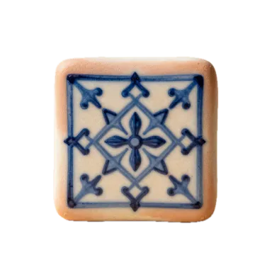
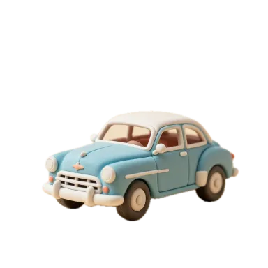

Flaggen
Ein Land, vier Antworten. Erkennst du es an seiner Flagge?
DEINE NÄCHSTE REISE IST EIN QUIZ
Errate Flaggen und Hauptstädte, erkunde die Karte und sammle 250 Souvenirs. Reise mit Giro: Dein nächstes Andenken ist nur eine Antwort entfernt.
Für iPhone · In sechs Sprachen


Ein kleines Quiz. Eine große Reise.
01 / So spielst du
Eine Flagge erkennen, eine Hauptstadt finden, eine Lieferung abschließen. Wähle deine nächste Station.
Ein Land, vier Antworten. Erkennst du es an seiner Flagge?
Von Rom bis Tokio: Finde die richtige Hauptstadt und erweitere deinen Horizont.
Welches Land ist größer? Welches hat mehr Einwohner? Vergleiche sie.
Schau dir einen Gegenstand an, folge den Hinweisen und errate seine Herkunft.
Trainiere dein Gedächtnis und finde die Paare, eine Entdeckung nach der anderen.
Überquere Grenzen auf der Karte und bringe das Souvenir an sein Ziel.
02 / 250 SOUVENIRS
250 Souvenirs zum Sammeln: Bauwerke, Tiere und Gegenstände, die von einem Ort erzählen. Was entdeckst du als Nächstes?






Meistere die tägliche Herausforderung, verlängere deine Serie und kehre für die Tagesbelohnungen zurück. Öffne Koffer und entdecke die Souvenirs darin.
03 / GIROVAGO
Quizfragen, Herausforderungen und Entdeckungen, immer griffbereit.


App-Bildschirmfotos auf Italienisch. Das Spiel ist in sechs Sprachen verfügbar.
Nenne bei einer Fehlermeldung dein iPhone-Modell, deine iOS-Version und was du gerade gemacht hast. GitHub-Meldungen sind öffentlich; nutze für Anfragen mit persönlichen Daten die E-Mail.